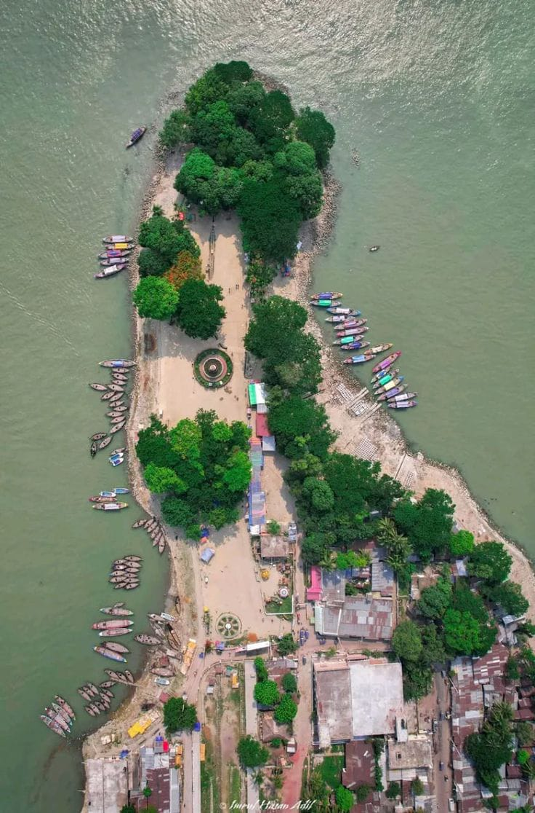
Sandwip Island
Sandwip Island is a beautiful coastal island known for its natural scenery, beaches and peaceful island environment.
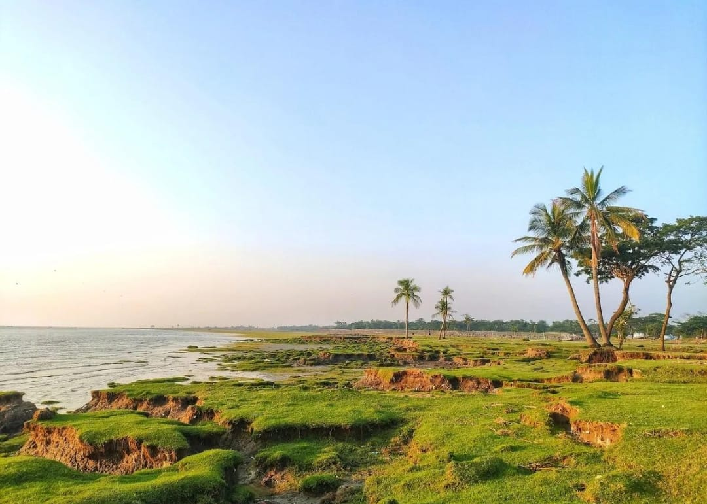
Amanullah Char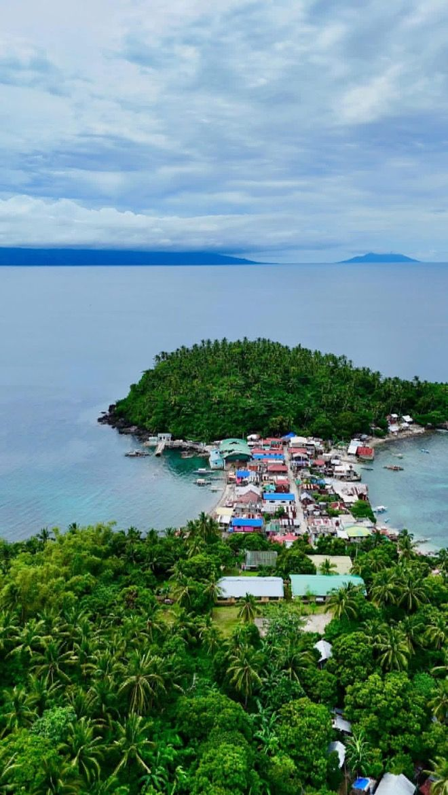
Urir Char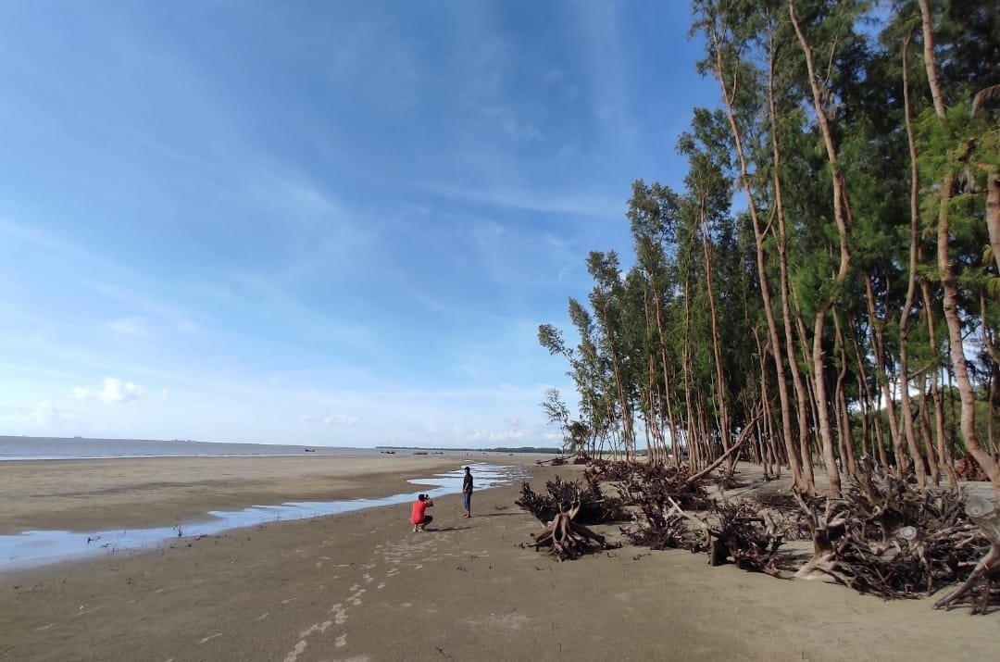
Kalapania
Bayazid Bostami Shrine
Bayazid Bostami Shrine is an important religious and historical site in Chattogram, visited by devotees and visitors throughout the year.
Bayazid Bostami
 Chandranath Temple
Chandranath Temple
 Shah Mohsen Aulia
Shah Mohsen Aulia

Patenga Sea Beach
Patenga Sea Beach is one of the most popular coastal destinations of Chattogram, known for its sea views, sunset and nearby port activities.
Patenga
 Parki
Parki
 Guliakhali
Guliakhali
 Banshbaria
Banshbaria
 Banshkhali
Banshkhali
 Kumira
Kumira
 Kattali
Kattali
 Sagoria
Sagoria
 Anandabazar
Anandabazar
 Halishahar
Halishahar

Khoiyachora Waterfall
Khoiyachora Waterfall is one of the most popular waterfalls of Chattogram, known for its beautiful multi-step cascades and green hill surroundings.
Khoiyachora
 Suptadhara
Suptadhara
 Shahasradhara
Shahasradhara
 Napittachora
Napittachora
 Komoldoho
Komoldoho
 Sonaichora
Sonaichora
 Horinmara
Horinmara
 Hatuvanga
Hatuvanga
 Baghbiyani
Baghbiyani
 Kupikatakum
Kupikatakum

Foy's Lake
Foy's Lake is a beautiful man-made lake surrounded by hills, forests and scenic natural landscapes in Chattogram.
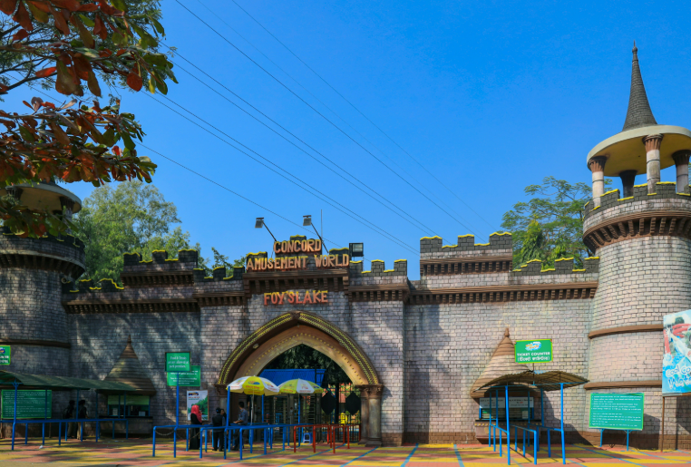
 Sitakunda Eco Park
Sitakunda Eco Park
 Mahamaya
Mahamaya
 Bhatiary Lake
Bhatiary Lake
 DC Park
DC Park
 Jamboree Park
Jamboree Park
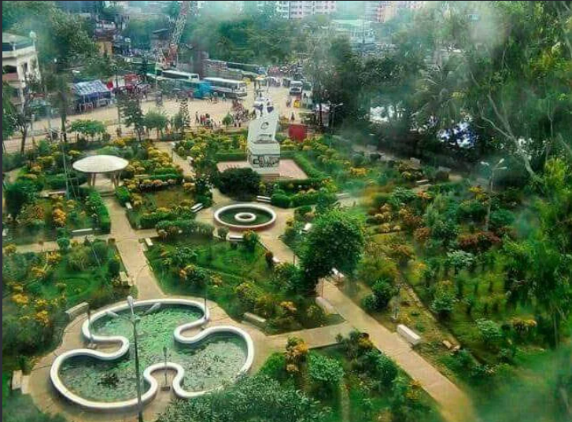
 Butterfly Park
Butterfly Park
 Forest Academy
Forest Academy
 Mariners Park
Mariners Park
POPULAR IN CHATTOGRAM
Our Recommendations
Waterfalls
Beaches
:max_bytes(150000):strip_icc()/SES-chicken-biryani-recipe-7367850-hero-A-ed211926bb0e4ca1be510695c15ce111.jpg)
Food & Cuisine
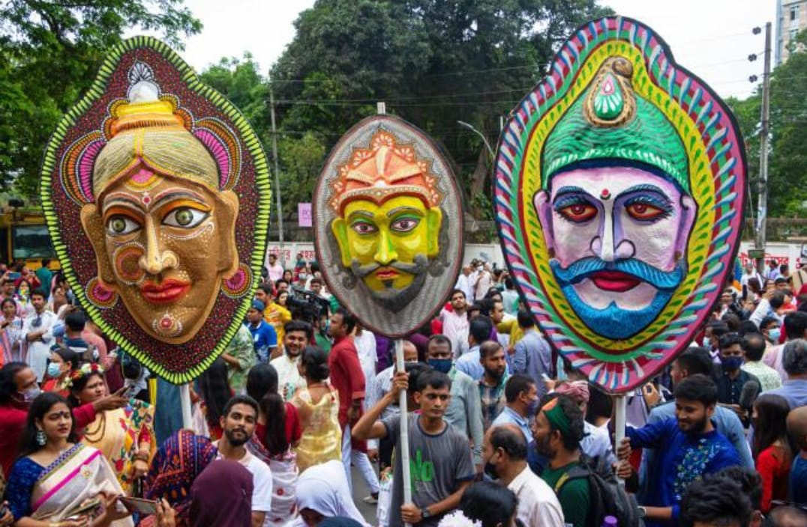
Cultural Events
Luxury Escapes

Green Tourism
STAY IN CHATTOGRAM
Popular Hotels in Chattogram
Explore popular hotels and resorts in Chattogram for comfortable stays, business trips and leisure travel.
1. Radisson Blu Hotel, Chattogram Bay View
📍 Lalkhan Bazar
📞 +880 9612-600800
Why Popular
One of Chattogram’s best-known luxury hotels, known for international-standard hospitality.
Services
Luxury rooms & suites, swimming pool, spa, restaurants, fitness centre, banquet and conference facilities.
2. The Peninsula Chittagong
📍 O.R. Nizam Road
📞 +880 24-1361101-15
Why Popular
A long-established upscale hotel, popular with both business and leisure travellers.
Services
Rooms & suites, rooftop pool, spa, restaurants, café, bar, fitness centre and conference facilities.
3. Hotel Agrabad
📍 Agrabad C/A
📞 +880 9612-600500
Why Popular
One of Chattogram’s established hotels, located in the city’s major commercial district.
Services
Rooms & suites, swimming pool, restaurants, spa, banquet and business facilities.
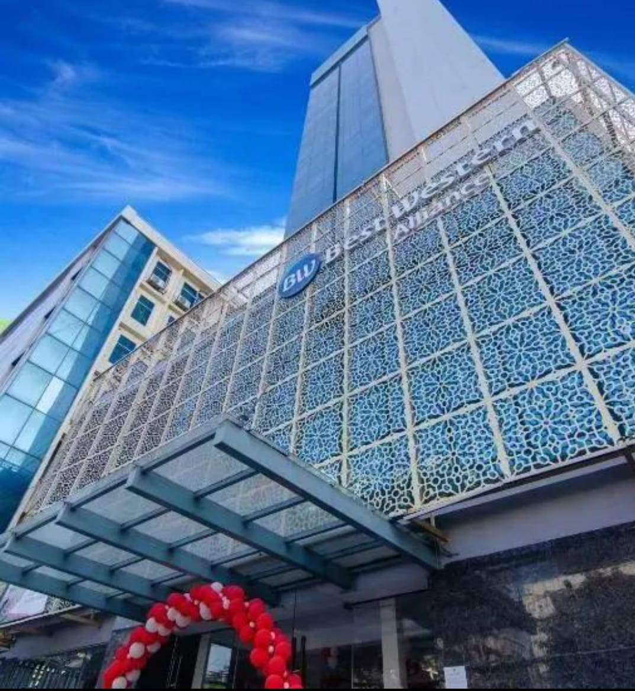
4. Best Western SKS Chattogram
📍 Agrabad C/A
📞 +880 1313-444478
Why Popular
A modern business-oriented hotel in Agrabad.
Services
Modern rooms, infinity pool, gym, spa, restaurant, breakfast, Wi-Fi and conference facilities.
5. Well Park Residence
📍 O.R. Nizam Road
📞 +880 1841-735551
Why Popular
A well-known city hotel, particularly suitable for business and family stays.
Services
Rooms & suites, restaurant, breakfast, spa, Wi-Fi, parking and event facilities.
6. Foy’s Lake Resort
📍 Foy’s Lake
📞 +880 1973-676595
Why Popular
Known for its resort atmosphere and beautiful lakeside environment.
Services
Resort accommodation, swimming pool, lakeside surroundings, dining and family leisure facilities.
7. Jatra Flagship Chattogram City Centre
📍 Chattogram City
📞 +880 1912-519918
Why Popular
A modern serviced accommodation option, suitable for short and extended stays.
Services
Serviced rooms, air conditioning, Wi-Fi, breakfast, housekeeping and parking.
AUTHENTIC CHITTAGONG
Chittagong Traditional Food
Discover traditional foods that represent the unique taste and culinary heritage of Chittagong.
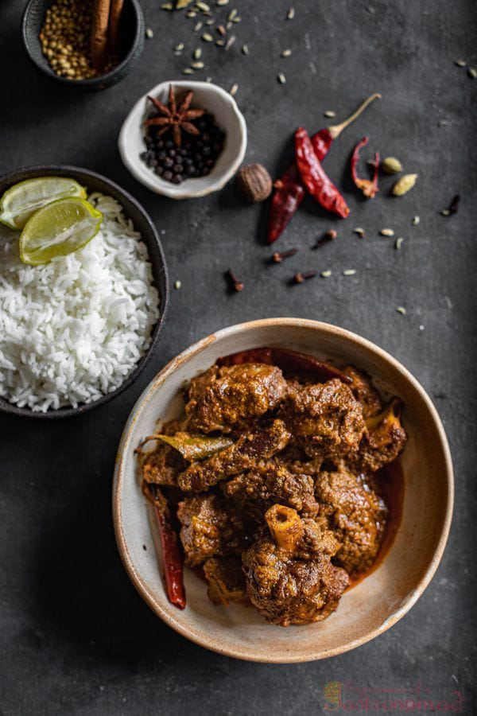
1. Mezbani Meat
Description
A signature Chittagong beef dish. The meat is intensely spicy, aromatic and rich, and it is traditionally served with plain rice.
How It's Made
Beef is cooked slowly with onions, dried and fresh chillies, spices, salt and oil. The meat is simmered until tender and the gravy becomes thick and deeply flavoured.
Traditional / History
Mezbani meat is an essential part of Mezban, Chittagong's traditional communal feast. Mezban is held for weddings, religious occasions, memorials and other important social events. It represents Chittagong's culture of hospitality and communal eating.
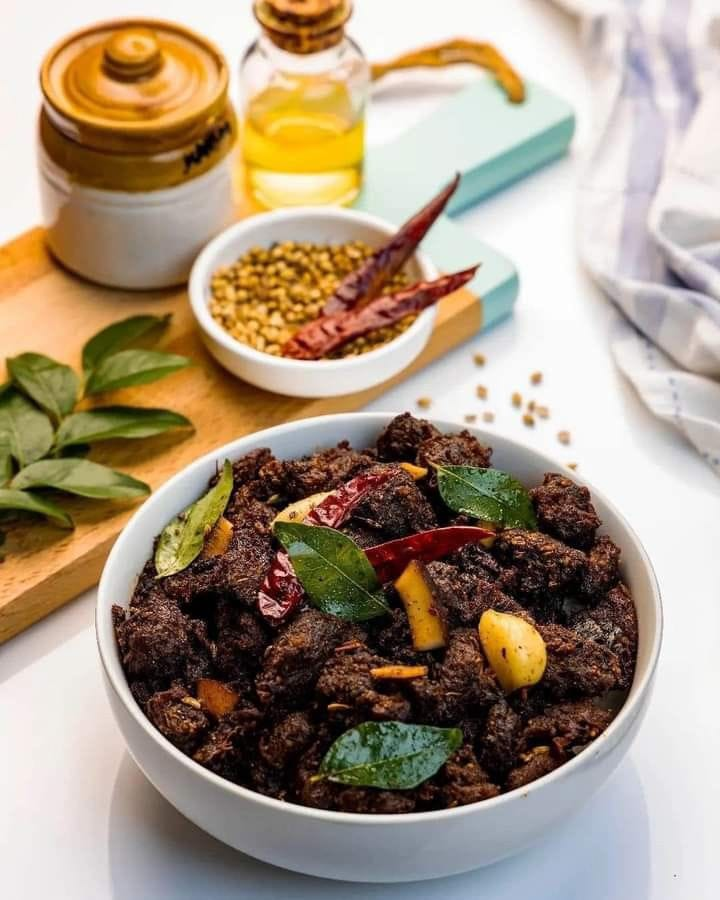
2. Kala Bhuna
Description
A dark, rich and intensely spiced beef dish. The meat becomes almost blackish-brown after long cooking, which gives the dish its name.
How It's Made
Beef is slowly cooked with onion, garlic, ginger, chilli, spices and oil. It is cooked for a long time until the moisture reduces and the spices coat the meat.
Traditional / History
Kala Bhuna has a particularly strong association with Chittagong's food culture. It is commonly prepared for Eid, weddings, family gatherings and traditional feasts.
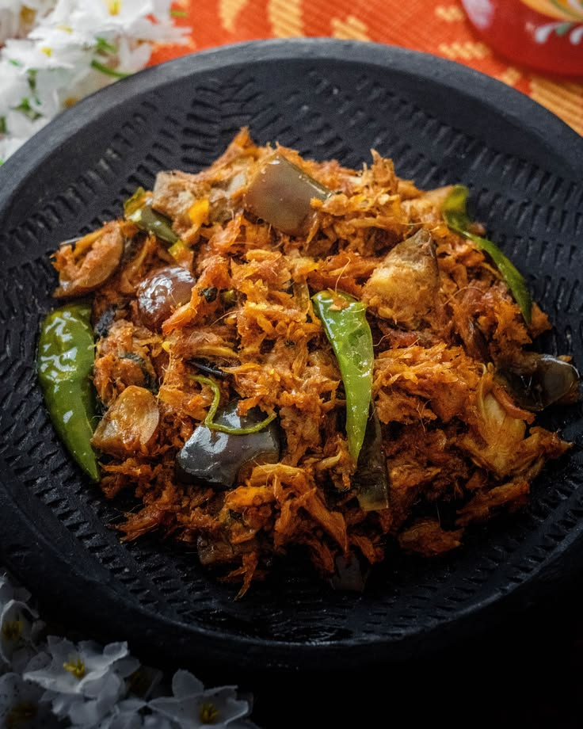
3. Shutki Bhuna
Description
A strongly flavoured traditional dried-fish preparation. It is spicy, salty and aromatic, and is especially loved by people who enjoy the distinctive flavour of dried seafood.
How It's Made
Dried fish is cleaned and sometimes soaked briefly, then cooked with onion, garlic, chilli, turmeric and other spices. It is fried or bhuna-style until the spices coat the fish.
Traditional / History
Shutki is deeply connected with Chittagong's coastal fishing culture. Fish-drying developed as a traditional preservation method, while markets such as Asadganj became important centres of the dried-fish trade.
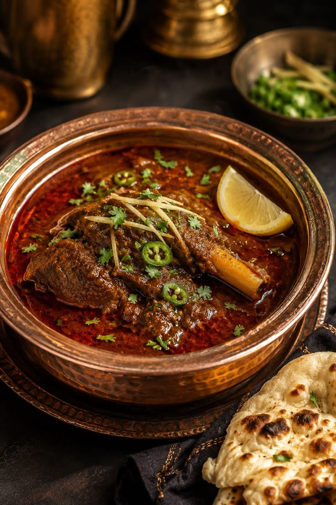
4. Nolar Kanji
Description
A thin, savoury broth made from beef bones. It has a light consistency but a rich flavour because of the bone marrow and meat.
How It's Made
Beef bones, particularly bones containing marrow, are simmered for a long time with spices and salt until the broth becomes flavourful.
Traditional / History
Nolar Kanji is strongly associated with Mezban and is traditionally served as part of the larger Mezban meal. It reflects the old practice of making full use of the animal in traditional cooking.
5. Mezban Dal / Boot Dal
Description
A simple but flavourful lentil preparation traditionally served alongside the rich meat dishes of a Mezban feast.
How It's Made
Lentils or chickpeas are cooked until soft and then seasoned with spices, onion, chilli and other ingredients. Traditional versions may have a richer flavour because of the cooking fat used in the feast.
Traditional / History
Its importance comes from its role in the traditional Mezban meal. It provides a lighter accompaniment to the spicy beef and rice.
6. Durus Kura
Description
A traditional whole-chicken preparation with a rich, spicy flavour. It is particularly associated with celebrations and special occasions.
How It's Made
A whole chicken is seasoned with spices and cooked until tender. It is then prepared with a rich spice mixture and cooked further until the flavours develop.
Traditional / History
Durus Kura is associated with Chittagong's traditional wedding and celebration cuisine. It is especially interesting as part of the region's distinctive local food culture and broader historical culinary influences.
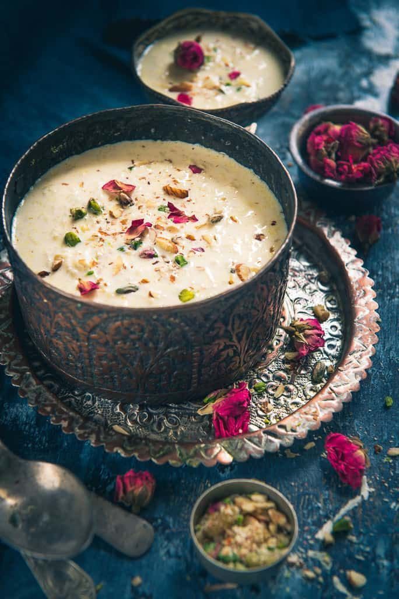
7. Modhubhaat (মধুভাত)
Description
A traditional sweet rice preparation, known for its soft texture and sweet flavour. It is a simple, homestyle delicacy rather than a modern commercial dessert.
How It's Made
Cooked rice is mixed with a sweetening ingredient such as molasses or sugar. Depending on the household recipe, additional ingredients may be used to give it more flavour.
Traditional / History
Modhubhaat is remembered as part of the older regional food traditions of Chittagong. Its recipes can vary between families, reflecting the way traditional foods were passed down through generations.
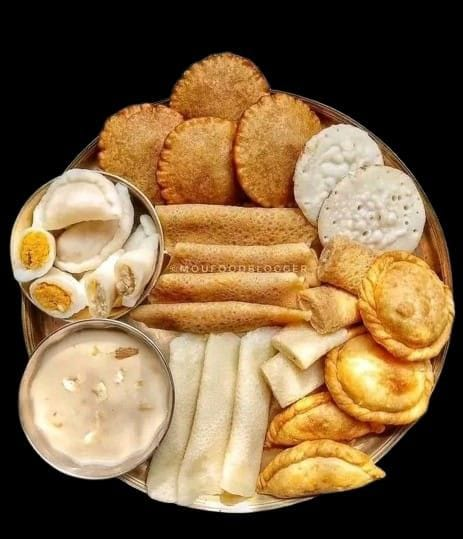
8. Traditional Chittagong Pitha
Description
Traditional pitha represents the homemade sweet and festive side of Chittagong's food culture. Different varieties can have different shapes, textures and fillings.
How It's Made
Depending on the variety, rice flour or rice batter is combined with coconut, molasses, sugar or other ingredients. It may be steamed, boiled, fried or cooked on a griddle.
Traditional / History
Pitha has a long-standing place in Bangladeshi rural and seasonal food culture, including Chittagong. It is particularly connected with winter, family gatherings and traditional celebrations.
CULTURE & TRADITION
Cultural Events of Chattogram
Discover the traditional festivals, cultural celebrations and community events that represent the rich cultural heritage of Chattogram and the Chittagong Hill Tracts.
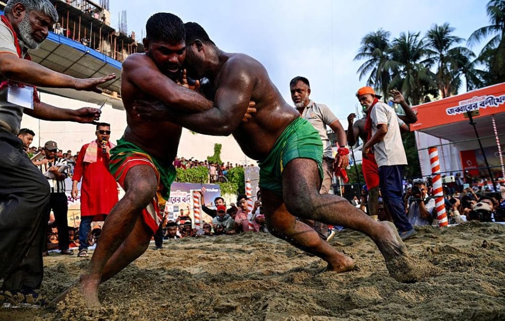
Jabbarer Boli Khela
📍 Laldighi Maidan, Chattogram
Cultural Heritage
History & Tradition
Jabbarer Boli Khela was introduced in 1909 by Abdul Jabbar Saudagar, a businessman and social worker from Chattogram. The event was intended to encourage physical strength and courage among young people during the British colonial period. It has continued as a traditional wrestling event for more than a century.
How It Is Celebrated
Wrestlers, locally known as Boli, gather at Laldighi Maidan and compete in traditional wrestling. The competition is accompanied by a large traditional fair around the area, attracting visitors from different parts of Chattogram.
Cultural Importance
It is one of the most famous folk traditions of Chattogram, bringing together traditional sport, local history and community participation.
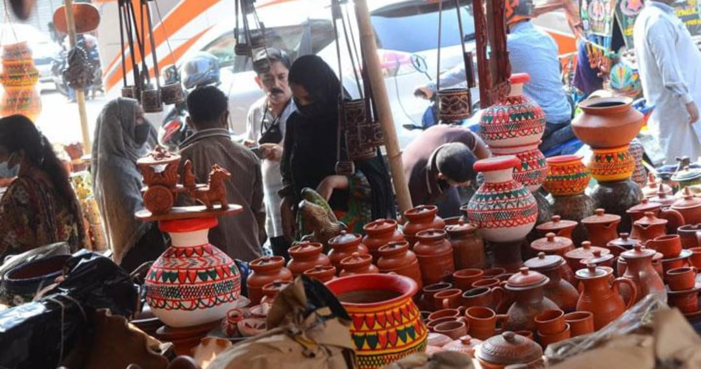
Jabbarer Boli Khela Boishakhi Mela
📍 Laldighi area, Chattogram
Cultural Heritage
History & Tradition
The Boishakhi Mela developed around the historic Jabbarer Boli Khela and gradually became an important part of the annual celebration. The fair brings together local traders, artisans and visitors.
How It Is Celebrated
Temporary stalls are set up around Laldighi and nearby streets. People can find clay products, bamboo and cane items, toys, jewellery, household products, plants, seasonal fruits and traditional food.
Cultural Importance
The fair preserves the atmosphere of an old Bengali folk market and provides a platform for traditional crafts, local products and community interaction.
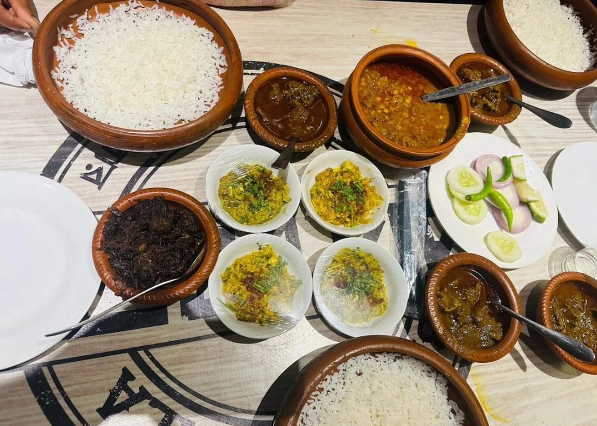
Chattogram Mezban
📍 Chattogram
Cultural Heritage
History & Tradition
Mezban, locally known as Mejjan, is a long-established social feast tradition of Chattogram. It is deeply connected with Chattogram's culture of hospitality and generosity.
How It Is Celebrated
A large number of people are invited to eat together. Traditional Mezban dishes commonly include white rice, spicy beef, dal, Nolar Kanji and Kala Bhuna. Mezban can be organised for weddings, religious occasions, memorial events and other important social gatherings.
Cultural Importance
Mezban is more than a meal. It represents Chatgaiya hospitality, generosity, social bonding and community participation.
Pohela Boishakh / Nobo Borsho
📍 Chattogram
Cultural Heritage
History & Tradition
Pohela Boishakh marks the beginning of the Bengali New Year. Although it is celebrated throughout Bangladesh, Chattogram has developed its own local cultural celebrations around the occasion.
How It Is Celebrated
People participate in Mangal Shobhajatra, cultural programmes, folk music, dance, Rabindra Sangeet, fairs and traditional food events. People also wear traditional Bengali clothing and spend the day with family and friends.
Cultural Importance
It celebrates Bengali language, culture, music, traditional dress, food and community identity.
Chaitra Sankranti
📍 Chattogram
Cultural Heritage
History & Tradition
Chaitra Sankranti is observed on the last day of the Bengali year. Traditionally, it represents the ending of the old year and preparation for the new one.
How It Is Celebrated
Different cultural organisations arrange music, dance, folk performances, fairs and cultural programmes. In many places, Chaitra Sankranti celebrations continue into the preparations for Pohela Boishakh.
Cultural Importance
It symbolises farewell to the old year, renewal and the beginning of a new cycle.
Biju
👥 Community: Chakma
📍 Chittagong Hill Tracts
Cultural Heritage
History & Tradition
Biju is the traditional New Year festival of the Chakma people. It is closely connected with the seasonal cycle and traditional community life.
How It Is Celebrated
The celebration traditionally extends over several days. People clean and decorate their homes, prepare traditional food, wear traditional clothes, visit relatives and friends, and participate in cultural activities.
Different days have different customs, including flower-related rituals and family/community gatherings.
Cultural Importance
Biju represents renewal, family, community, cultural identity and welcoming a new year.
Sangrai
👥 Community: Marma
📍 Chittagong Hill Tracts, especially Bandarban
Cultural Heritage
History & Tradition
Sangrai is the traditional New Year celebration of the Marma community. It is one of the most well-known indigenous New Year celebrations in the Hill Tracts.
How It Is Celebrated
One of its most famous traditions is Jal Keli, the water festival. People splash water on each other as part of welcoming the New Year. Traditional music, dance, games and community gatherings are also organised.
Cultural Importance
The water celebration symbolises cleansing, leaving the past behind and welcoming a fresh beginning.
Bishu
👥 Community: Tanchangya
📍 Chittagong Hill Tracts
Cultural Heritage
History & Tradition
Bishu is the traditional New Year celebration of the Tanchangya community. Like the other indigenous New Year festivals of the Hill Tracts, it is associated with renewal and the beginning of a new year.
How It Is Celebrated
People prepare traditional food, visit relatives, wear traditional clothes and take part in music, dance and cultural programmes. Community gatherings are an important part of the celebration.
Cultural Importance
Bishu preserves the Tanchangya people's traditional customs, cultural identity and community heritage.
Boisabi
📍 Chittagong Hill Tracts
Cultural Heritage
History & Tradition
Boisabi is not one single festival belonging to one community. It is a collective term commonly used for the traditional New Year celebrations of several indigenous communities of the Chittagong Hill Tracts.
It is associated particularly with celebrations such as Biju, Sangrai and Baisu/Baisuk.
How It Is Celebrated
Depending on the community, celebrations include:
- Traditional clothing
- Traditional food
- Music and dance
- Water celebrations
- Cultural performances
- Sports and traditional games
- Visiting relatives and friends
- Community gatherings
- Fairs and cultural programmes
Cultural Importance
Boisabi represents the cultural diversity of the Chittagong Hill Tracts, while each community maintains its own distinct festival, language, customs and traditions.
COASTAL BEAUTY OF CHATTOGRAM
Beautiful Beaches
Discover the beautiful beaches of Chattogram and enjoy peaceful coastal scenery, sea waves and unforgettable sunsets.
Patenga Sea Beach
📍 Patenga, Chattogram
A popular sea beach located near Chattogram city and the mouth of the Karnaphuli River. It is well known for beautiful sunsets, sea waves and a lively coastal atmosphere.
Parki Sea Beach
📍 Anwara, Chattogram
A wide and peaceful beach surrounded by natural coastal scenery. Parki is popular for its sandy shore, gentle waves and beautiful sunset views. It is a relaxing destination away from the busy city.
Guliakhali Sea Beach
📍 Sitakunda, Chattogram
Guliakhali is known for its unique combination of green grasslands, muddy coastal landscapes and the sea. Its natural surroundings create a different beach experience for nature lovers and photographers.
Banshbaria Sea Beach
📍 Banshbaria, Sitakunda, Chattogram
A scenic coastal destination surrounded by greenery and a peaceful natural environment. The beach offers beautiful sea views and a relaxing atmosphere, making it suitable for a short day trip.
Sandwip Beach
📍 Sandwip, Chattogram
A peaceful coastal destination situated on Sandwip Island. Visitors can enjoy the sea, natural scenery and the traditional rural lifestyle of the island. It offers a quieter experience away from mainland beaches.
NATURAL BEAUTY OF CHATTOGRAM
Green Tourism
Explore the peaceful green landscapes, forests, hills, lakes and natural surroundings that make Chattogram a beautiful destination for nature lovers.
Sitakunda Eco Park
📍 Sitakunda, Chattogram
Sitakunda Eco Park is a beautiful natural destination surrounded by hills, forests and greenery. It offers visitors a peaceful environment for walking, sightseeing and enjoying the area's natural beauty.
Foy's Lake
📍 Pahartali, Chattogram
Foy's Lake is a scenic man-made lake surrounded by green hills and natural landscapes. Its peaceful surroundings make it a popular place for relaxation, boating and family recreation.
Chandranath Hill
📍 Sitakunda, Chattogram
Chandranath Hill is surrounded by green forests and scenic landscapes. The hiking trail offers beautiful natural views and makes the area a popular destination for nature lovers and adventure seekers.
Dhopachhari
📍 Dhopachhari, Chattogram
Dhopachhari is known for its green hills, forests, streams and peaceful natural surroundings. It is a suitable destination for visitors who want to experience a quieter side of Chattogram.
Banshbaria
📍 Sitakunda, Chattogram
Banshbaria combines coastal scenery with green surroundings and a peaceful atmosphere. The area is suitable for visitors who want to enjoy nature, fresh air and scenic views.
WATERFALLS OF CHATTOGRAM
Waterfalls
Discover the beautiful waterfalls of Chattogram, surrounded by green hills, forests and scenic natural landscapes.
Khoiyachora Waterfalls
📍 Mirsharai, Chattogram
Khoiyachora is one of the most popular waterfalls in the hills of Mirsharai. It is known for its multiple cascades, green surroundings and adventurous trekking trail.
Suptadhara Waterfall
📍 Sitakunda, Chattogram
Suptadhara Waterfall is located inside Sitakunda Eco Park and is surrounded by dense green forest. Its natural setting makes it a peaceful destination for nature lovers.
Napittachora Waterfall
📍 Mirsharai, Chattogram
Napittachora is a scenic waterfall trail surrounded by hills, streams and forest. The trail includes several waterfalls and cascades, making it popular for hiking and adventure.
Komoldoho Waterfall
📍 Sitakunda, Chattogram
Komoldoho is a beautiful waterfall trail surrounded by hills and greenery. The trail features several waterfalls and offers an exciting experience for hiking and nature exploration.
Mithachora Waterfall
📍 Mirsharai, Chattogram
Mithachora is a scenic waterfall surrounded by the green hills of Mirsharai. Its natural surroundings and flowing water make it an attractive destination for nature and adventure lovers.
Boyalia Waterfall
📍 Mirsharai, Chattogram
Boyalia Waterfall is a beautiful natural attraction in the hilly area of Mirsharai. Green forests and rocky landscapes create a peaceful environment for exploring nature.
BE ORGANIZED
Travel Essentials
TRAVEL BY ROAD
Bus Services
Explore major bus services that connect Chattogram with Dhaka, Cox's Bazar and other destinations.
Green Line Paribahan
Green Line provides intercity bus services on several major routes including Chattogram, Dhaka and Cox's Bazar.
Official Website ↗Shyamoli Paribahan
Shyamoli Paribahan provides domestic and international coach services across several major routes in Bangladesh.
Official Website ↗Hanif Enterprise
A well-known intercity bus service connecting Chattogram with different cities of Bangladesh.
S. Alam Paribahan
An intercity bus operator serving Chattogram and several other destinations in Bangladesh.
Shohagh Paribahan
A long-distance coach service connecting major cities through intercity routes.
TRAVEL BY AIR
Airlines
Chattogram's Shah Amanat International Airport provides access to domestic and international air travel.
Biman Bangladesh Airlines
Bangladesh's national flag carrier offering domestic and international flights.
Official Website ↗US-Bangla Airlines
A Bangladeshi airline offering domestic and international flights.
Official Website ↗TRAVEL BY RAIL
Train Services
Bangladesh Railway provides rail connections between Chattogram and different parts of Bangladesh.
Bangladesh Railway
The national railway system of Bangladesh, providing passenger train services across major routes including Chattogram.
Official Website ↗Railway E-Ticket
Use the official railway e-ticketing service to search train schedules and purchase tickets online.
Buy Train Ticket ↗LOCAL TRAVEL SUPPORT
Tour Guides & Groups
Connect with local tour groups and travel guides for trip planning and guided travel experiences.
Chittagong Tour Group - CTG
Email: Chittagongtourgroup@gmail.com
Phone: +880 1868-510475
Visit Facebook ↗Shuvo Chan Travellers - SCT
Email: shuvochantravellers686@gamail.com
Phone: +880 1349-539294
Visit Facebook ↗SHOPPING IN CHATTOGRAM
Shopping Near Chattogram City
Discover popular shopping malls and traditional markets around Chattogram city.
New Market
One of the popular shopping destinations in Chattogram, offering clothing, accessories, footwear and everyday items.
📍 Jubilee Road, ChattogramSanmar Ocean City
A popular modern shopping mall with fashion, lifestyle stores, restaurants and other retail facilities.
📍 Nasirabad, ChattogramAfmi Plaza
A modern shopping destination where visitors can find fashion, footwear, lifestyle products and food options.
📍 Bayazid Bostami Road, ChattogramTeri Bazar
A historic and busy traditional shopping area, particularly known for clothing, fabrics and wholesale shopping.
📍 Teri Bazar, ChattogramReazuddin Bazar
A busy traditional commercial area offering clothing, electronics, accessories and various everyday products.
📍 Reazuddin Bazar, ChattogramDISCOVER CHATTOGRAM
Digital Travel Map
Explore tourist destinations, hotels, restaurants, hospitals and transport locations across Chattogram.
Find Your Next Destination
Discover beautiful places around Chattogram and explore important locations through our interactive digital map.
USEFUL INFORMATION
Important Links
Quick access to essential government services, emergency support and healthcare facilities in Chattogram.
Bangladesh Police
Official website of Bangladesh Police and access to important police services.
Visit Website ↗Fire Service & Civil Defence
Official Fire Service and Civil Defence information and emergency services.
Visit Website ↗myGov Bangladesh
Access government services and important citizen information online.
Visit Website ↗Hospitals in Chattogram
Find useful information and official websites of major hospitals in Chattogram.
View Hospitals ↗PLAN YOUR JOURNEY
Bangladesh Holiday Calendar
Check public holidays and plan your trips around Bangladesh.
Click a holiday to see details.